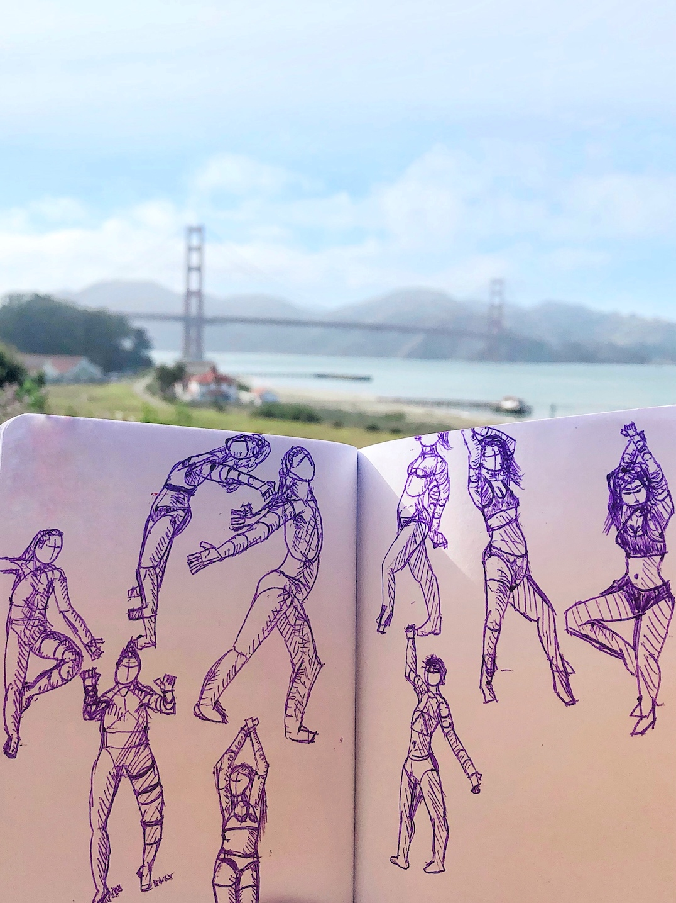

Why I Left Tech to Pursue Art
Today, I left my job at a tech startup to study art full time.
I've spent 100s of hours the past 6 months drawing, and I'm eager to
go all-in. I'm planning to apply to Sheridan's animation undergrad
program in February, and have been busy preparing a portfolio for it.
Here's some of my recent work, and a lil
music video.

In middle-school I competed in Canadian nationals for the board game
Go, and gave up on my dreams on going pro when AI defeated the world
champion.
In the 7 years since then, the thing that has remained constant in my
life is programming. I grew up building AI and computer graphics
projects for fun. I skipped class in high school to work at startups. I
worked on early versions of Midjourney in September of 2021. I'm aware
of the irony of pursuing an art career now.
I've really enjoyed these years, but I want to explore more of what
life has to offer.
I don't enjoy working in tech anymore. I'm good at it, am compensated
well, and the job is fairly painless. But when I started my first
full-time job two years ago, I thought "is this really what the rest of
my life will be like? churning out code to solve problems I don't care
about?" and that feeling never quite went away.
I've met many people who really enjoy their jobs, both engineers and
founders. I'm happy for them, but it's not a good fit for me.
I've also met many young people in tech who feel dissatisfied. Many
go through their career attempting to...
Earn as much money as possible, with the hope of
- Finding happiness through wealth
- Retiring by age 30
Found a startup, with the hope of
- Creating meaningful impact on the world
- Becoming someone both themselves and others will admire
Money: I grew up poor, but I don't particularly care
about making money. Beyond paying for rent and groceries I don’t have
many material desires. The past two years I worked at an AI hedge fund
in San Francisco, found myself surrounded by millionaires, and saw that
they weren't notably happier than my broke college friends. I really
enjoy creating things, and know that this will be true for the next few
decades, so working a job I don't enjoy to retire early doesn't appeal
to me.
Founder: I need to learn more, and experience more
of the world before I’m capable of bringing a meaningful vision of the
world into reality. The problems I’m currently able to solve (CRMs,
tools for developers etc) aren't problems that I care about. I'd much
rather tell stories that inspire people and bring a smile to the people
I’m close to.
I also want to get out of the bubble I currently live in and
experience new ways of living.
I've been immersed in tech since I started high school. It’s shaped
what I value in myself and others (raw analytical thinking), what I
think about (abstract issues and systems), and how I think about these
things (optimizing for outcomes).
I think there’s a lot of merit to the "tech way of life". But I also
want to try living with different values (kindness and creativity),
think about different things (history, culture, and art), and change how
I think about these things (emotions and aesthetics).
These things aren't incompatible with working in tech, but they won't
be the values held by most of your peers.
I've known that I wanted to leave for some time now, but being able
to point towards what you want more of in the world is much better than
complaining.
In April of 2022 I watched an
interview with a storyboard artist at Riot Games. He talks about how
he holed up in Europe for a year to focus everything on improving, and
his progress was amazing.
For years I had enjoyed making creative tech projects, but this
interview was the first time I felt that art, without the tech side, was
something I could get better at. All it would take would be countless
hours of practice.
Getting home from a long day of work, and readying myself to draw for
3 hours, knowing that all the art I'd make wouldn't be close to my
standards was a challenging experience. It was the first time I was
diving into a non-STEM area in years, and being confronted with my lack
of skill day in and day out was daunting.
But I enjoyed the challenged, and loved every moment of making
art!

^ some figures I made two weeks after I started drawing
I also read a
collection of essays by Hayao Miyazaki, and one passage changed the
views I had on creating art being largely pointless, due to the deluge
of it that social media surrounds us with.
The most important thing when creating art is that you know what you
want to say with it. There are innumerable examples of people making
films with a very high level of technique, but only a very fuzzy idea of
what they really want to say. When people who know what they want to say
make films with a low level of technique, we greatly appreciate the
films because there is really something to them.
When young, nearly all of us want to be taken seriously, as soon as
possible. Perhaps because of this we tend to overemphasize
technique.
Even while surrounded by a flood of lifeless mediocre art, we still
need to drink a good glass of water once in while.
I want to create animated films, comics, and stories that are
refreshing -- that inspire people to change their life for the better,
or that just bring a smile to their face.
Leaving a successful career might be unwise, but I think that to make
a successful career change, you have to go all-in, rather than just
chipping away in the evenings. The worst case outcome with me leaving my
job to study art full-time is that I become really good at something I
love, I don't enjoy working in the art industry, and I go back to my
previous career.
Like everybody, I grew up with a secret unspoken belief that way deep
down I was different from everyone else. That I would go on to achieve
great things with my life. I'm 20 years old, and if the rest of my 20s
went by in a blur of startups and ever increasing salary -- I'd feel
like I had wasted my potential.
"I'm just afraid that if I died today, then my life would have
amounted to nothing" - Soul, Pixar